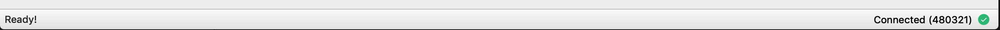

Troubleshooting issues¶
The zcashd debug log¶
The debug.log file is the first place to start for troubleshooting issues. The file is located in the data directory and by default is found in the following locations:
- Windows:
%HOMEPATH%\AppData\Roaming\Zcash\debug.log - macOS:
~/Library/Application Support/Zcash/debug.log - Linux:
~/.zcash/debug.log
If you have specified a custom datadir option then the debug.log file will be located in that directory. Using a tool such as tail you can view the last 100 lines with the following command:
tail -n 100 ~/.zcash/debug.log
On Windows %HOMEPATH% is typically C:\Users\username where username is your username.
The zec-qt-wallet.log file¶
As with the debug.log file, the zec-qt-wallet.log file will help to identify issues with the ZecWallet application. Providing the latest output of this file can help in troubleshooting issues. The location of this file is in the following location for each platform:
- Windows:
%HOMEPATH%\AppData\Roaming\zec-qt-wallet-org\zec-qt-wallet\zec-qt-wallet.log - macOS:
/Users/gareth/Library/Application Support/zec-qt-wallet-org/zec-qt-wallet/zec-qt-wallet.log - Linux:
~/.local/share/zec-qt-wallet-org/zec-qt-wallet/zec-qt-wallet.log
My node isn’t syncing or is slow to sync¶
If your node isn’t syncing or is slow to sync, first check that you are running the latest version of ZecWallet then check that you have connections to other nodes as you may have a network issue. ZecWallet will display if you are connected via the application footer.

You can also find this information in the zcashd tab on the main menu (if you are running the embedded zcashd) and it will list the number of connections to other peers, which should be greater than 0. If you do not have any connections then check your internet connection, then check that the ports required for zcashd are not blocked and that you have not specified a TOR connection in the options but do not have TOR running.
If you are still having issues, then look in the debug log to identify any error messages.
The speed of syncing is dependent on a number of variables such as memory, CPU and bandwidth as blocks are also verified in addition to being downloaded.
zcashd ports¶
By default zcashd runs on the following ports.
- 8232 for mainnet RPC
- 8233 for mainnet peer-to-peer network
- 18232 for testnet RPC
- 18233 for testnet peer-to-peer network
You may override any of these values in zcash.conf.
My transaction didn’t get mined¶
If you send a transaction before the node is fully synced, or perhaps due to network congestion then the transaction may fail and be returned to your wallet due to the Transaction Expiry feature. When a user submits a transaction to the network, by default it will persist in the mempool for 20 blocks (currently approximately 50 minutes). If it has not been mined after that period, it is no longer valid and will be evicted from all mempools. The value will return to the sender’s wallet.
zcashd has no connections¶
See the section on syncing issues for common resolutions to this issue.
I can’t generate a new shielded (z) address¶
When the wallet is first launched, and before it has synced, the Sprout New Address button is greyed out, and it is not possible to generate a new shielded address. Sprout addresses have been deprecated in ZecWallet to encourage the use of Sapling ones. The ability to create Sapling addresses is only displayed in ZecWallet once the Sapling activation height is reached (block 419200). If you need to generate a new shielded address before the wallet has synced you may do so directly from the command line interface using the z_getnewaddress (Sapling) or z_getnewaddress sprout (legacy Sprout).
Some of my shielded transactions are not displayed in the transaction tab¶
By default, zcashd does not store outgoing shielded transactions. To overcome this, ZecWallet will store shielded sends locally and this option may be disabled and any saved transactions cleared. If you are missing any outgoing shielded transactions check that the option to Remember shielded transactions is selected in the wallet options. There is no way (currently) of recovering the information about outgoing fully shielded spends if this option is disabled.
Sending from Sprout address to Sapling gives an error¶
You cannot send directly from a Sprout address (zc) to a Sapling address (zs) as it must pass through the Sapling turnstile. See the details on the turnstile migration for details on how to move your funds from a Sprout address to a Sapling one in a privacy-preserving way.
How to perform a wallet rescan¶
Potentially slow wallet rescan
Depending on the number of addresses in your wallet (particularly shielded addresses) a wallet rescan can be slow. Simply leave it running until the process is complete.
Embedded zcashd¶
If you are using the embedded zcashd (There is a “zcashd” tab in ZecWallet), you can go to Edit -> Settings -> Troubleshooting and select the “rescan” option and click apply. You’ll need to restart ZecWallet to start the rescan.
Via an external zcashd¶
If you are running the external zcashd you will need to restart zcashd after shutting down ZecWallet. With ZecWallet closed open a terminal/command prompt and run the following command depending on your platform (and adjust accordingly to match your system if required).
- Windows (installer):
cmd /C ""C:\Program Files (x86)\zecwallet\zcashd.exe" -rescan" - Windows (binaries):
zcashd.exe -rescanfrom the directory of the downloaded binaries. - macOS:
/Applications/zecwallet.app/Contents/MacOS/zcashd -rescan - Linux (deb):
zcashd -rescan - Linux (binaries):
./zcashd -rescanfrom the directory of the downloaded binaries.
Then open ZecWallet and it should connect to the running zcashd and you can monitor the progress of the rescan on the startup screen.
Note that the command above will open an instance of zcashd in the foreground, you can change this behaviour by adding the -daemon option. You will need to manually stop zcashd as ZecWallet will not close an externally running node. The simplest method is to run the zcash-cli stop command:
- Windows (installer):
cmd /C ""C:\Program Files (x86)\zecwallet\zcash-cli.exe" stop" - Windows (binaries):
zcash-cli.exe stopfrom the directory of the downloaded binaries. - macOS:
/Applications/zecwallet.app/Contents/MacOS/zcash-cli stop - Linux (deb):
zcash-cli stop - Linux (binaries):
./zcash-cli stopfrom the directory of the downloaded binaries.
Editing zcash.conf¶
As an alternative to the external zcashd you can edit the zcash.conf file and add the line rescan=1 and then start ZecWallet normally. After you have opened ZecWallet and the rescan is complete you must remove the line from zcash.conf to prevent the wallet from rescanning every time it is opened and close ZecWallet as normal.
How to perform a reindex¶
A reindex is sometimes required when the blockchain data becomes corrupted or you wish to enable certain features. When a reindex happens the full blockchain is redownloaded so it will take some time to complete and should only be performed where absolutely necessary.
To complete a reindex simply follow the instruction for a wallet rescan replacing -rescan with -reindex.
zcashd -reindex
“Unknown Errors”¶
If you are seeing “Unknown Error” error messages, your Zcash params may have become corrupt, and ZecWallet or zcashd are having trouble. You should delete the zcash params directory and restart ZecWallet.
Delete all the files under these directories:
- Windows:
%HOMEPATH%\AppData\Roaming\ZcashParams\ - macOS:
~/Library/Application Support/ZcashParams/ - Linux:
~/.zcash-params/
Large Download
The params files together are about 1.7GB in size, so your download may take a while
ZecWallet will then re-download the params files when restarted.
The displayed balance is incorrect¶
If your balance is not being correctly displayed, first ensure that your software is up to date and that your node is fully synced. If your balance is still incorrect you can perform a manual wallet rescan which will rescan the blockchain for missing wallet transactions on startup. Depending on the number of (shielded) addresses in the wallet, this can be (very) slow so just leave it running until complete and your balance should be reflected accurately.
Common error messages¶
Could not start embedded zcashd¶
This means ZecWallet couldn’t start its embedded zcashd for some reason. ZecWallet will show you another dialog box with the error reported from zcashd for debugging purposes as well. You might be able to solve this by simply restarting ZecWallet, but if you repeatedly see this error, it might be one of the following reasons:
- If you compiled ZecWallet yourself and are running it:
zcashddoesn’t come with the GitHub repository, so you’ll have to compilezcashdseparately and copy it over into your ZecWallet directory. - You might have corrupt zcash params: In this case, you may try deleting your params and letting ZecWallet download them again.
If all else fails, you can run an external zcashd and ZecWallet will connect to it.
Authentication error¶
Normally, ZecWallet can pick up the rpcuser/rpcpassword from zcash.conf. If it doesn’t for some reason, you can set the username/password in the File->Settings menu. If you are connecting to a remote node, make sure that zcashd on the remote machine is accepting connections from your machine. The target machine’s firewall needs to allow connections from your host and also zcashd is set to be configured to accept connections from this host.
Using the RPC port over a remote interface is NOT RECOMMENDED
Using the RPC port over a remote interface is NOT RECOMMENDED, because that will cause the rpcpassword to be transmitted over the network unencrypted, allowing any observer to steal your keys and take over the OS account running zcashd.
Not enough balance when sending transactions¶
The most likely cause for this is that you are trying to spend unconfirmed funds. Unlike Bitcoin, the Zcash protocol doesn’t let you spent unconfirmed funds. Wait for at least one confirmation and then retry the transaction.
My issue isn’t resolved¶
Open an issue on GitHub or tweet at @zecwallet for help.